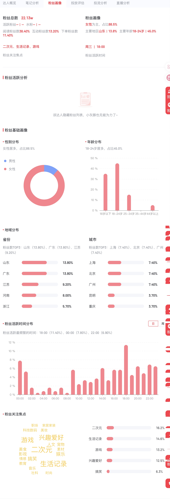
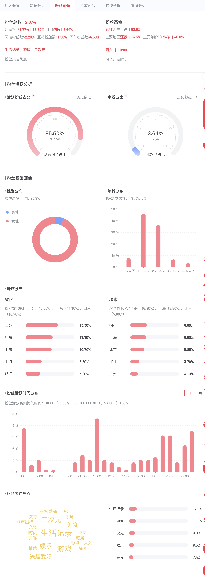
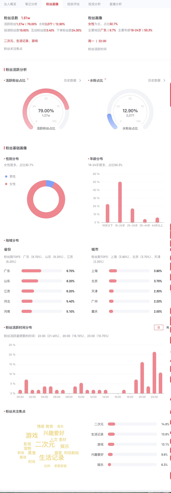
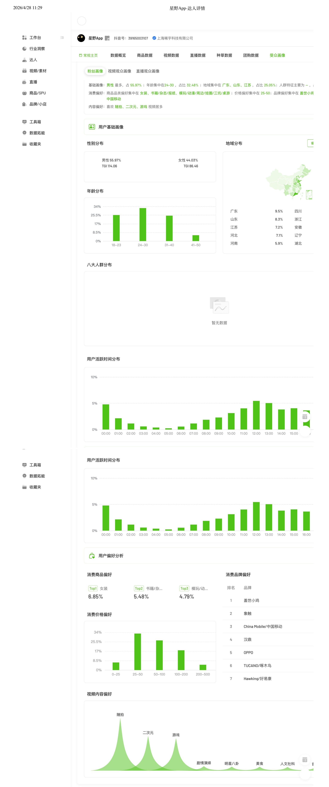

星野小红书账号受众画像
用于展示星野小红书受众特征。
来源：受众画像 / 星野按竞品拆解用户画像类型、占比估算和 Aimee 当前应优先验证的人群。
本页的综合画像聚焦中国 AI 陪伴产品，统计口径为 EVE、星野、筑梦岛、猫箱、半月湾、MoMood、Sweete。MoMood / Sweete 已补充读取应用商店评论：MoMood 2041 条、平均评分 4.68；Sweete 559 条、平均评分 4.17。以下占比仍是基于评论样本和产品定位的估算，不代表官方用户数据。
MoMood / Sweete 暂缺可展示的原始截图，但评论 xlsx 已作为用户声音和画像估算依据。
有效计算样本：EVE、星野、筑梦岛、猫箱、半月湾、MoMood、Sweete。综合图为基于各竞品定位、旧报告用户画像、社媒/应用商店评论主题频次的估算。
以下占比为基于评论样本和产品定位的估算，不代表官方用户数据。
| 用户类型 | 估算占比 | 判断依据 |
|---|---|---|
| 情感陪伴需求用户 | 25% | 国内 UGC 智能体平台，报告显示小红书受众 88.5% 女性，核心用户偏年轻女性和深度陪伴/养成玩家。 |
| 虚拟恋爱 / 关系养成用户 | 25% | 国内 UGC 智能体平台，报告显示小红书受众 88.5% 女性，核心用户偏年轻女性和深度陪伴/养成玩家。 |
| 角色扮演 / 二次元兴趣用户 | 22% | 国内 UGC 智能体平台，报告显示小红书受众 88.5% 女性，核心用户偏年轻女性和深度陪伴/养成玩家。 |
| AI 产品尝鲜用户 | 8% | 国内 UGC 智能体平台，报告显示小红书受众 88.5% 女性，核心用户偏年轻女性和深度陪伴/养成玩家。 |
| 情绪树洞 / 倾诉型用户 | 10% | 国内 UGC 智能体平台，报告显示小红书受众 88.5% 女性，核心用户偏年轻女性和深度陪伴/养成玩家。 |
| 社交陪伴 / 朋友型用户 | 5% | 国内 UGC 智能体平台，报告显示小红书受众 88.5% 女性，核心用户偏年轻女性和深度陪伴/养成玩家。 |
| 创作娱乐 / 剧情互动用户 | 5% | 国内 UGC 智能体平台，报告显示小红书受众 88.5% 女性，核心用户偏年轻女性和深度陪伴/养成玩家。 |
国内 UGC 智能体平台，报告显示小红书受众 88.5% 女性，核心用户偏年轻女性和深度陪伴/养成玩家。
围绕陪伴感、关系感、情绪支持、自然回复、角色稳定和付费边界展开。
旧报告 / 星野；星野小红书与抖音受众画像

星野小红书账号受众画像｜受众画像 / 星野
优先验证情感陪伴和关系养成人群，避免单纯把产品定位为 AI 工具或泛娱乐聊天。
以下占比为基于评论样本和产品定位的估算，不代表官方用户数据。
| 用户类型 | 估算占比 | 判断依据 |
|---|---|---|
| 情感陪伴需求用户 | 15% | 二次元剧情与语 C 代餐属性强，报告提示低龄/学生党和价格敏感用户较多。 |
| 虚拟恋爱 / 关系养成用户 | 18% | 二次元剧情与语 C 代餐属性强，报告提示低龄/学生党和价格敏感用户较多。 |
| 角色扮演 / 二次元兴趣用户 | 30% | 二次元剧情与语 C 代餐属性强，报告提示低龄/学生党和价格敏感用户较多。 |
| AI 产品尝鲜用户 | 8% | 二次元剧情与语 C 代餐属性强，报告提示低龄/学生党和价格敏感用户较多。 |
| 情绪树洞 / 倾诉型用户 | 8% | 二次元剧情与语 C 代餐属性强，报告提示低龄/学生党和价格敏感用户较多。 |
| 社交陪伴 / 朋友型用户 | 6% | 二次元剧情与语 C 代餐属性强，报告提示低龄/学生党和价格敏感用户较多。 |
| 创作娱乐 / 剧情互动用户 | 15% | 二次元剧情与语 C 代餐属性强，报告提示低龄/学生党和价格敏感用户较多。 |
二次元剧情与语 C 代餐属性强，报告提示低龄/学生党和价格敏感用户较多。
围绕陪伴感、关系感、情绪支持、自然回复、角色稳定和付费边界展开。
旧报告 / 猫箱；猫箱小红书账号受众画像

猫箱小红书账号受众画像｜受众画像 / 猫箱
优先验证情感陪伴和关系养成人群，避免单纯把产品定位为 AI 工具或泛娱乐聊天。
以下占比为基于评论样本和产品定位的估算，不代表官方用户数据。
| 用户类型 | 估算占比 | 判断依据 |
|---|---|---|
| 情感陪伴需求用户 | 20% | AI 伴侣 + 乙女游戏混合体，小红书画像 94% 女性，核心讨论围绕活人感、恋爱感和通讯费。 |
| 虚拟恋爱 / 关系养成用户 | 35% | AI 伴侣 + 乙女游戏混合体，小红书画像 94% 女性，核心讨论围绕活人感、恋爱感和通讯费。 |
| 角色扮演 / 二次元兴趣用户 | 15% | AI 伴侣 + 乙女游戏混合体，小红书画像 94% 女性，核心讨论围绕活人感、恋爱感和通讯费。 |
| AI 产品尝鲜用户 | 8% | AI 伴侣 + 乙女游戏混合体，小红书画像 94% 女性，核心讨论围绕活人感、恋爱感和通讯费。 |
| 情绪树洞 / 倾诉型用户 | 10% | AI 伴侣 + 乙女游戏混合体，小红书画像 94% 女性，核心讨论围绕活人感、恋爱感和通讯费。 |
| 社交陪伴 / 朋友型用户 | 5% | AI 伴侣 + 乙女游戏混合体，小红书画像 94% 女性，核心讨论围绕活人感、恋爱感和通讯费。 |
| 创作娱乐 / 剧情互动用户 | 7% | AI 伴侣 + 乙女游戏混合体，小红书画像 94% 女性，核心讨论围绕活人感、恋爱感和通讯费。 |
AI 伴侣 + 乙女游戏混合体，小红书画像 94% 女性，核心讨论围绕活人感、恋爱感和通讯费。
围绕陪伴感、关系感、情绪支持、自然回复、角色稳定和付费边界展开。
旧报告 / EVE；EVE 小红书受众画像

EVE 小红书账号受众画像｜受众画像 / EVE
优先验证情感陪伴和关系养成人群，避免单纯把产品定位为 AI 工具或泛娱乐聊天。
以下占比为基于评论样本和产品定位的估算，不代表官方用户数据。
| 用户类型 | 估算占比 | 判断依据 |
|---|---|---|
| 情感陪伴需求用户 | 18% | 国内 AI 人设聊天与关系养成产品，报告称年轻女性占比较高且付费意愿存在，但对 OOC 和敏感肌容忍度低。 |
| 虚拟恋爱 / 关系养成用户 | 25% | 国内 AI 人设聊天与关系养成产品，报告称年轻女性占比较高且付费意愿存在，但对 OOC 和敏感肌容忍度低。 |
| 角色扮演 / 二次元兴趣用户 | 25% | 国内 AI 人设聊天与关系养成产品，报告称年轻女性占比较高且付费意愿存在，但对 OOC 和敏感肌容忍度低。 |
| AI 产品尝鲜用户 | 6% | 国内 AI 人设聊天与关系养成产品，报告称年轻女性占比较高且付费意愿存在，但对 OOC 和敏感肌容忍度低。 |
| 情绪树洞 / 倾诉型用户 | 8% | 国内 AI 人设聊天与关系养成产品，报告称年轻女性占比较高且付费意愿存在，但对 OOC 和敏感肌容忍度低。 |
| 社交陪伴 / 朋友型用户 | 5% | 国内 AI 人设聊天与关系养成产品，报告称年轻女性占比较高且付费意愿存在，但对 OOC 和敏感肌容忍度低。 |
| 创作娱乐 / 剧情互动用户 | 13% | 国内 AI 人设聊天与关系养成产品，报告称年轻女性占比较高且付费意愿存在，但对 OOC 和敏感肌容忍度低。 |
国内 AI 人设聊天与关系养成产品，报告称年轻女性占比较高且付费意愿存在，但对 OOC 和敏感肌容忍度低。
围绕陪伴感、关系感、情绪支持、自然回复、角色稳定和付费边界展开。
旧报告 / 筑梦岛；筑梦岛小红书受众画像

筑梦岛小红书账号受众画像｜受众画像 / 筑梦岛
优先验证情感陪伴和关系养成人群，避免单纯把产品定位为 AI 工具或泛娱乐聊天。
以下占比为基于评论样本和产品定位的估算，不代表官方用户数据。
| 用户类型 | 估算占比 | 判断依据 |
|---|---|---|
| 情感陪伴需求用户 | 20% | 主打超现实真人 AI，但报告显示女性向陪伴用户对真人化路线抵触，商业化和审美均有风险。 |
| 虚拟恋爱 / 关系养成用户 | 25% | 主打超现实真人 AI，但报告显示女性向陪伴用户对真人化路线抵触，商业化和审美均有风险。 |
| 角色扮演 / 二次元兴趣用户 | 5% | 主打超现实真人 AI，但报告显示女性向陪伴用户对真人化路线抵触，商业化和审美均有风险。 |
| AI 产品尝鲜用户 | 20% | 主打超现实真人 AI，但报告显示女性向陪伴用户对真人化路线抵触，商业化和审美均有风险。 |
| 情绪树洞 / 倾诉型用户 | 10% | 主打超现实真人 AI，但报告显示女性向陪伴用户对真人化路线抵触，商业化和审美均有风险。 |
| 社交陪伴 / 朋友型用户 | 10% | 主打超现实真人 AI，但报告显示女性向陪伴用户对真人化路线抵触，商业化和审美均有风险。 |
| 创作娱乐 / 剧情互动用户 | 10% | 主打超现实真人 AI，但报告显示女性向陪伴用户对真人化路线抵触，商业化和审美均有风险。 |
主打超现实真人 AI，但报告显示女性向陪伴用户对真人化路线抵触，商业化和审美均有风险。
围绕陪伴感、关系感、情绪支持、自然回复、角色稳定和付费边界展开。
旧报告 / 半月湾；小红书原声截图；版本演进截图

半月湾小红书评论截图｜小红书截图 / 半月湾 / 小红书1.jpg
不要把真人感表达成真人化/换脸路线，建议改为真实自然、有活人感、虚拟安全感。
以下占比为基于评论样本和产品定位的估算，不代表官方用户数据。
| 用户类型 | 估算占比 | 判断依据 |
|---|---|---|
| 情感陪伴需求用户 | 22% | MoMood 评论样本量较大，2041 条 App Store 评论平均评分 4.68。用户一边高度认可好玩、救星、情绪价值，一边集中吐槽棒棒糖消耗、会员后仍计费、记忆重复、崩人设和微信连接功能缩水。 |
| 虚拟恋爱 / 关系养成用户 | 24% | MoMood 评论样本量较大，2041 条 App Store 评论平均评分 4.68。用户一边高度认可好玩、救星、情绪价值，一边集中吐槽棒棒糖消耗、会员后仍计费、记忆重复、崩人设和微信连接功能缩水。 |
| 角色扮演 / 二次元兴趣用户 | 12% | MoMood 评论样本量较大，2041 条 App Store 评论平均评分 4.68。用户一边高度认可好玩、救星、情绪价值，一边集中吐槽棒棒糖消耗、会员后仍计费、记忆重复、崩人设和微信连接功能缩水。 |
| AI 产品尝鲜用户 | 8% | MoMood 评论样本量较大，2041 条 App Store 评论平均评分 4.68。用户一边高度认可好玩、救星、情绪价值，一边集中吐槽棒棒糖消耗、会员后仍计费、记忆重复、崩人设和微信连接功能缩水。 |
| 情绪树洞 / 倾诉型用户 | 12% | MoMood 评论样本量较大，2041 条 App Store 评论平均评分 4.68。用户一边高度认可好玩、救星、情绪价值，一边集中吐槽棒棒糖消耗、会员后仍计费、记忆重复、崩人设和微信连接功能缩水。 |
| 社交陪伴 / 朋友型用户 | 6% | MoMood 评论样本量较大，2041 条 App Store 评论平均评分 4.68。用户一边高度认可好玩、救星、情绪价值，一边集中吐槽棒棒糖消耗、会员后仍计费、记忆重复、崩人设和微信连接功能缩水。 |
| 创作娱乐 / 剧情互动用户 | 16% | MoMood 评论样本量较大，2041 条 App Store 评论平均评分 4.68。用户一边高度认可好玩、救星、情绪价值，一边集中吐槽棒棒糖消耗、会员后仍计费、记忆重复、崩人设和微信连接功能缩水。 |
MoMood 评论样本量较大，2041 条 App Store 评论平均评分 4.68。用户一边高度认可好玩、救星、情绪价值，一边集中吐槽棒棒糖消耗、会员后仍计费、记忆重复、崩人设和微信连接功能缩水。
情绪价值、虚拟恋爱、角色陪伴、语音/电话/朋友圈互动、较稳定的长期记忆，以及更可预期的会员/糖果机制。
MoMood-loveAI角色心动陪伴_应用商店数据（用户评论）.xlsx；主题归类摘要 JSON
该竞品已读取评论数据，但暂未找到可展示的原始图片截图，建议后续补充 App Store 截图、小红书截图或产品截图。
MoMood 说明关系型产品可以拿到很强喜爱度，但收费不能把基础陪伴拆成太多消耗项；Aimee 应把免费体验、会员权益和虚拟币边界讲清楚。
以下占比为基于评论样本和产品定位的估算，不代表官方用户数据。
| 用户类型 | 估算占比 | 判断依据 |
|---|---|---|
| 情感陪伴需求用户 | 18% | Sweete 559 条 App Store 评论平均评分 4.17。用户认可恋爱感、聊天风格和活人感，也反复提出语音、图片、朋友圈、主动发消息等关系功能；负面集中在免费转收费、钻石获取不足、重复对话、记忆弱和闪退。 |
| 虚拟恋爱 / 关系养成用户 | 22% | Sweete 559 条 App Store 评论平均评分 4.17。用户认可恋爱感、聊天风格和活人感，也反复提出语音、图片、朋友圈、主动发消息等关系功能；负面集中在免费转收费、钻石获取不足、重复对话、记忆弱和闪退。 |
| 角色扮演 / 二次元兴趣用户 | 14% | Sweete 559 条 App Store 评论平均评分 4.17。用户认可恋爱感、聊天风格和活人感，也反复提出语音、图片、朋友圈、主动发消息等关系功能；负面集中在免费转收费、钻石获取不足、重复对话、记忆弱和闪退。 |
| AI 产品尝鲜用户 | 12% | Sweete 559 条 App Store 评论平均评分 4.17。用户认可恋爱感、聊天风格和活人感，也反复提出语音、图片、朋友圈、主动发消息等关系功能；负面集中在免费转收费、钻石获取不足、重复对话、记忆弱和闪退。 |
| 情绪树洞 / 倾诉型用户 | 10% | Sweete 559 条 App Store 评论平均评分 4.17。用户认可恋爱感、聊天风格和活人感，也反复提出语音、图片、朋友圈、主动发消息等关系功能；负面集中在免费转收费、钻石获取不足、重复对话、记忆弱和闪退。 |
| 社交陪伴 / 朋友型用户 | 8% | Sweete 559 条 App Store 评论平均评分 4.17。用户认可恋爱感、聊天风格和活人感，也反复提出语音、图片、朋友圈、主动发消息等关系功能；负面集中在免费转收费、钻石获取不足、重复对话、记忆弱和闪退。 |
| 创作娱乐 / 剧情互动用户 | 16% | Sweete 559 条 App Store 评论平均评分 4.17。用户认可恋爱感、聊天风格和活人感，也反复提出语音、图片、朋友圈、主动发消息等关系功能；负面集中在免费转收费、钻石获取不足、重复对话、记忆弱和闪退。 |
Sweete 559 条 App Store 评论平均评分 4.17。用户认可恋爱感、聊天风格和活人感，也反复提出语音、图片、朋友圈、主动发消息等关系功能；负面集中在免费转收费、钻石获取不足、重复对话、记忆弱和闪退。
恋爱感聊天、低门槛免费试用、主动联系、语音/图片/朋友圈等关系场景，以及基础稳定性和记忆自然度。
Sweete-你的AI心动陪伴_应用商店数据（用户评论）.xlsx；主题归类摘要 JSON
该竞品已读取评论数据，但暂未找到可展示的原始图片截图，建议后续补充 App Store 截图、小红书截图或产品截图。
Sweete 说明新用户可以被恋爱感和活人感吸引，但免费到付费的迁移必须给足缓冲；Aimee 可以用每日免费额度/体验官权益验证付费阈值。
用户画像图均来自当前项目文件夹内已有素材。MoMood / Sweete 已读取 xlsx 评论，但未找到对应原始图片；Replika / Nomi 已从本页中国综合画像口径中移除。
用于展示星野小红书受众特征。
来源：受众画像 / 星野
用于说明抖音和小红书画像不能简单等同于真实付费用户。
来源：受众画像 / 星野 / 抖音用于展示 EVE 小红书受众画像原始素材。
来源：受众画像 / EVE用于用户画像报告中展示猫箱平台受众画像原始素材。
来源：受众画像 / 猫箱用于支撑筑梦岛用户画像推断。
来源：受众画像 / 筑梦岛半月湾报告指出真人化路线与女性向陪伴心理存在冲突。
来源：小红书截图 / 半月湾 / 小红书1.jpg旧 HTML 竞品报告中的中国 AI 陪伴产品部分、受众画像图片、原始社媒截图、MoMood / Sweete 应用商店评论 xlsx。估算逻辑基于评论样本、产品定位、报告中用户画像描述和渠道画像，不代表官方数据。Replika / Nomi 可作为海外参考，但不参与本页中国综合画像计算。